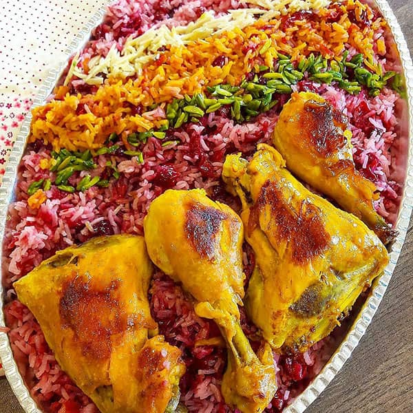

Albaloo Polo Recap

Albaloo Polo is a Persian rice dish with sour cherries and chicken. It is usually served with a side of salad Shirazi.
recipe:
- 1. Wash the rice and soak it in salted water for a few hours.
- 2. Cook the chicken with onions, salt, pepper, and turmeric.
- 3. Add the sour cherries and cook for a few minutes.
- 4. Add the rice and cook until done.
- 5. Serve with salad Shirazi.